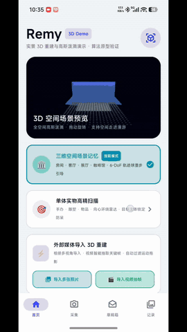
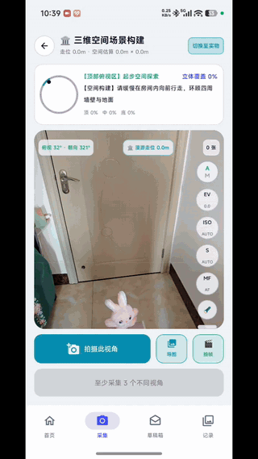
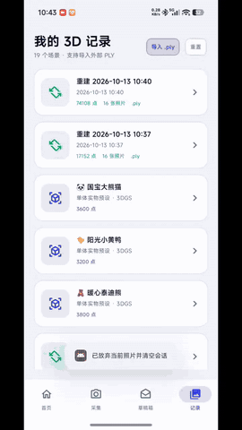

🎬 实机运行全链路演示

1. 单体拍摄与画质校验
Pro 参数锁定 · 拉普拉斯模糊检测 · 主体一致性追踪 · 照片机位对齐

2. 36 单元空间穹顶 360° 采集
3 层俯仰角 × 12 经度扇区半球雷达 · ARCore 实时点云叠加

3. 外部 PLY 导入与 360° 交互
二进制/ASCII 3DGS 解析 · 60FPS 轨道旋转 · 一键存相册
原理 P1：空间采样算法体系（体素哈希、泊松盘与梯度分箱）
1. 梯度显著性与分箱配额采样 (Gradient Binning)
利用二维 Sobel 算子计算图像亮度梯度幅值 $M(x,y) = \sqrt{G_x^2 + G_y^2}$，平衡边缘特征与内部表面采样：
2. 体素网格空间哈希下采样 (Voxel Grid Hashing)
将连续空间 $\mathbb{R}^3$ 划分为边长 $v_{\text{size}} = 0.045\text{m}$ 的体素立方体，通过大素数异或哈希或 64 位移位键实现 $O(1)$ 聚类降噪：
3. 泊松盘均匀表面约束 (Poisson Disk)
在生成单体模型表面高斯椭球时，约束任意两椭球中心欧氏距离 $\|p_i - p_j\|_2 \ge r_{\min}$，符合蓝噪声频谱分布，避免椭球过密导致的深度闪烁或过疏导致的表面缝隙。
4. 自适应步长流式采样 (Adaptive Stride)
解析外部百万级 PLY 文件时，按安全上限 $N_{\max} = 50,000$ 动态计算步长 $\text{stride} = \lceil N / N_{\max} \rceil$，边读取字节流边抽样，内存峰值恒定低于 $160\text{MB}$。
原理 P2：3D 高斯椭球参数化与 EWA 屏幕各向异性投影
1. 三维协方差矩阵的正定分解
三维高斯核定义为 $G(x) = \exp\left(-\frac{1}{2}(x-\mu)^T \Sigma^{-1} (x-\mu)\right)$。为保证协方差矩阵 $\Sigma$ 半正定，将其分解为旋转矩阵 $R$（由单位四元数 $q=(w,x,y,z)$ 构造）与对角尺度矩阵 $S = \text{diag}(s_x, s_y, s_z)$：
2. EWA Splatting 与球谐函数 (SH) 颜色采样
给定视图变换 $W$ 与透视投影雅可比矩阵 $J$，屏幕二维投影协方差为 $\Sigma' = J W \Sigma W^T J^T$。零阶球谐基系数（`f_dc_0..2`）通过球面常数基 $Y_0^0 = \frac{1}{2\sqrt{\pi}} \approx 0.282095$ 还原漫反射基底色：
原理 P3：体积辐射度混合、逆 Sigmoid 解码与屏幕 Gamma 校正
1. 不透明度逆 Sigmoid (Logit) 激活还原
3DGS 训练时将 $\alpha \in (0,1)$ 存储为 $\text{logit}(\alpha) = \ln\frac{\alpha}{1-\alpha}$。解析时执行 Sigmoid 还原：
2. 片元着色器 Gamma 空间转换与中心强化
将物理线性辐射亮度转换为屏幕 sRGB 空间，并通过 `smoothstep` 强化高斯中心不透明度：
原理 P4：360° 球面轨道旋转与实时视线深度重排序机制
1. AABB 质心归零 + 球面极坐标轨道相机
计算包围盒中心 $\mathbf{c} = \frac{\mathbf{p}_{\min}+\mathbf{p}_{\max}}{2}$ 并归一化至 $[-1,1]^3$。每帧由偏航角 $\theta_{\text{yaw}}$ 与俯仰角 $\phi_{\text{pitch}} \in [-1.45, 1.45]$ 计算相机坐标 $\mathbf{E}$：
2. C++ NDK 视线深度重排序 + 裁剪空间 Billboard
相机视角更新时，按当前视线方向重排所有高斯椭球的混合顺序并正对屏幕展开：
Q1：在拍照采样阶段，传统 Mesh 摄影测量与 3DGS 辐射场采样有什么区别？
| 采样对比维度 | 传统 Mesh 摄影测量 (SfM + MVS + UV 贴图) | 3D Gaussian Splatting (3DGS 辐射场采样) | 本项目工程实现 |
|---|---|---|---|
| 1. 高光与反光材质 | 排斥高光：高光随视角移动会导致立体匹配失败与网格破洞 | 直接支持：利用球谐函数 (SH) 拟合随视角流动的高光，需多仰角采集光泽变化 | 内置高光模型支持；引导多仰角环绕采集 |
| 2. 自动曝光 (AE) 波动 | 中度敏感：后期 UV 贴图烘焙可通过 Multi-band Blending 匀光修补接缝 | 高度敏感：全图光度损失 ($L_1+\text{D-SSIM}$) 会把曝光明暗跳变拟合成空中悬浮噪点 (Floaters) | NativeProCameraController 硬件级锁定 ISO、快门与白平衡 |
| 3. 空间视角覆盖策略 | 局部重叠拼接：相邻图重叠 >70%，支持近距离局部特写 | 全局视锥交叉约束：需完整环绕覆盖上、中、下三层半球视角 | SpatialCaptureGuide 3 层俯仰角 × 12 扇区 = 36 单元穹顶雷达 |
| 4. 毛发与薄片边缘 | 泊松表面重建易将细微结构粘连或平滑滤除 | 依靠椭球拉伸与 $\alpha$ 渐变还原边缘细节，需补充切向掠射角采样 | 支持自由视角与连续视频流关键帧抽取 (VideoKeyframeExtractor) |
Q2：为什么移动端本地秒级重建的模型偏稀疏，而离线训练的 3DGS 模型连续光滑？
1. 手机端本地秒级重建（3.5s ~ 7.5s）
- 定位：端侧即时几何重建与现场采集校验。
- 过程：CPU 协程并发提取 Sobel 边缘与表面采样点 $\rightarrow$ 圆弧针孔反投影 $\rightarrow$
SurfaceMesher体素滤波与重心插值致密化。 - 特点：无需云端 GPU 服务器、零网络开销、数秒内输出三维点云。
2. 桌面/云端 3DGS 完整训练（15 ~ 40 分钟）
- 定位：高保真辐射场拟合（Inria 3DGS / Postshot / Nerfstudio）。
- 过程：在独立显卡上执行 30,000 次可微光栅化与梯度反向传播，动态执行自适应密度控制（Splitting / Cloning / Pruning），生成 50 万~200 万个各向异性椭球。
- 无缝衔接：通过
UniversalPlyLoader支持直接导入并 60FPS 渲染标准 `.ply` 模型。
Q3：为什么标准 3DGS PLY 模型直接渲染会出现色彩暗淡发灰或半透明？如何还原？
1. 体积辐射累积合成
按从前向后体积累积公式 $C = \sum c_i \alpha_i \prod (1-\alpha_j)$ 逐层叠加，并对 `raw_opacity` 执行 Sigmoid 激活还原。
2. 线性空间转 sRGB Gamma
球谐颜色位于 Linear Space，片元着色器通过 pow(col, 1.0/1.85) 与 mix(gray, col, 1.28) 还原屏幕色彩。
3. 深色 3D 视口对比
3D 展示区域保持 #06101E 深色背景，使浅色与半透明边界清晰锐利。
Q4：拍照确认与端侧质检是如何从 0.8s~1.8s 优化至毫秒级（< 5ms）的？
| 优化维度 | 优化前实现（总耗时 800ms ~ 1800ms） | 优化后原生实现（总耗时 < 30ms，质检 < 5ms） |
|---|---|---|
| 1. 原图 EXIF 旋转处理 | 主线程同步解码 12MP~48MP 全尺寸原图、旋转矩阵并重压缩 JPEG 覆写磁盘（500~1500ms） | 移除原图重压缩覆写，改在 Dispatchers.Default 后台协程执行内存级旋转 |
| 2. 磁盘 I/O 解码次数 | 单次拍照对同一文件连续调用 3 次 BitmapFactory.decodeFile |
通过 decodeBitmapWithExif(file, maxSide=360) 仅执行 1 次下采样解码并内存复用 |
| 3. 像素遍历与方差算子 | 双层循环逐点调用 bitmap.getPixel(x,y) + MutableList<Float> 装箱 |
bitmap.getPixels() 一次性读入 IntArray，基于 $\text{Var}(X)=E[X^2]-(E[X])^2$ 单趟计算（< 5ms） |
| 4. 采集分辨率与模式隔离 | 默认最高像素输出；未区分空间模式与单体模式 | 配置 ResolutionSelector(1280×960)；仅在 ScanMode.OBJECT 模式下启用主体偏离校验 |
Q5：如何在不按快门拍照的情况下，实时监测并更新相机角度与目标偏移状态？
Q6：点击实拍缩略图自动对齐 3D 相机机位是如何实现的？
Q7：移动端如何在有限内存与算力下实现十万级椭球的 60 FPS 渲染并避免 OOM？
1. 内存控制：流式解析 + DirectBuffer
- 流式读取：
UniversalPlyLoader支持 ASCII 与binary_little_endian，仅实例化满足i % sampleStep == 0的顶点。 - 零拷贝显存上传：
ByteBuffer.allocateDirect(splatCount * 6 * 56)直接对接 OpenGL VBO。
2. 帧率保障：C++ 基数排序 + 动态尺寸缩放
- C++ NDK 排序：避免在每帧 16.6ms 渲染周期内触发 JVM 垃圾回收。
- 视距自适应 Splat 半径：顶点着色器动态计算
dynamicSize = baseFactor / sqrt(zoom)。